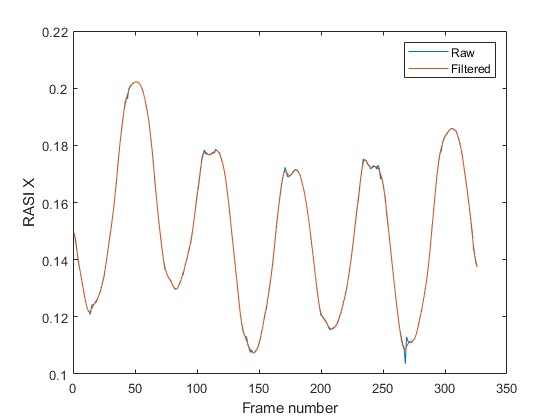
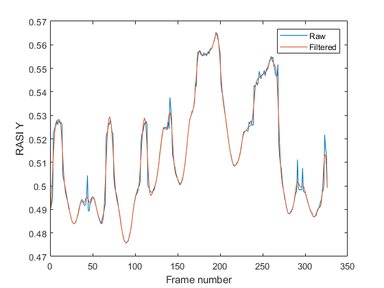
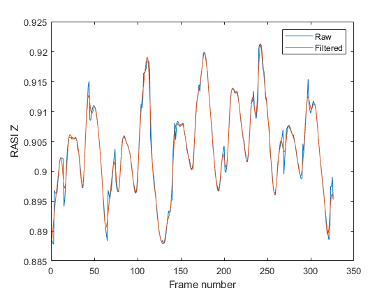

%Assignment : Assignment 8 part Two %Author : Robert J. Foster %Date : October 27th, 2019 %Resources : Matlab for Engineers Book, www.mathworks.com/help %Commenting Style C doxygen : http://www.doxygen.nl/manual/docblocks.html %A program that ciphers through the raw data that is labeled RASI %Then uses the butter filter to convert it to Hz wave length. %Then plots the data through the dependancies of X,Y,Z each seperated by %their own window. Very similar to the activity that we did in class close all %Setting up to read the data and work through the list for the RASI %information [Marker, Headers, raw2]= xlsread('Marker Data.xlsx'); RASI_X= Marker(:,80); RASI_Y= Marker(:,81); RASI_Z= Marker(:,82); %Applying the butter filter for Hz convert and smoothing it out, then %following it up with filtfilt which will minimize the starting and ending %transients [b,a]= butter(4,8/(60/2)); smooth_RASI_X= filtfilt(b,a,RASI_X); smooth_RASI_Y= filtfilt(b,a,RASI_Y); smooth_RASI_Z= filtfilt(b,a,RASI_Z); %Working through figure one,plotting the data and saving it to a jpg in folder.. figure(1) plot(RASI_X) hold on plot(smooth_RASI_X) xlabel('Frame number') ylabel('RASI X') legend('Raw','Filtered') saveas(gcf,'Frame One Rasi X','jpg'); %Working through figure two,plotting the data and saving it to a jpg in folder.. figure(2) plot(RASI_Y) hold on plot(smooth_RASI_Y) xlabel('Frame number') ylabel('RASI Y') legend('Raw','Filtered') saveas(gcf,'Frame Two Rasi Y','jpg'); %Working through figure three,plotting the data and saving it to a jpg in folder.. figure(3) plot(RASI_Z) hold on plot(smooth_RASI_Z) xlabel('Frame number') ylabel('RASI Z') legend('Raw','Filtered') saveas(gcf,'Frame Three Rasi Z','jpg');  